|
Introduction |
Method 1: Brush/Pencil | Method
2: Spot Healing Brush | Method 3: Healing Brush | Method
4:
Patch | Method 5: Content-Aware Move |
| Method 8: Generative Fill |
Generative Fill is a powerful AI tool built into Photoshop. We can use Generative Fill to remove objects in much the same way that the Remove tool works, but the real power of Generative Fill is that we can use it to create objects that have nothing to do with our current image. For example, I could use Generative Fill to add a unicorn to my Colosseum image...
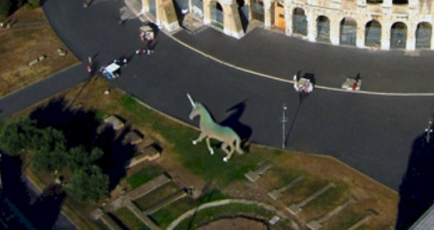
Or I could add a rocket ship...
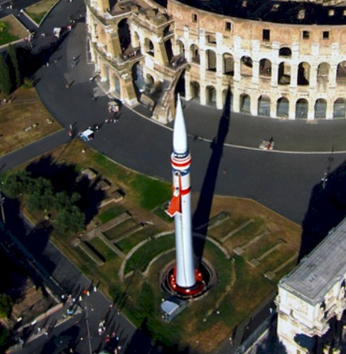
Or an Egyptian pyramid...
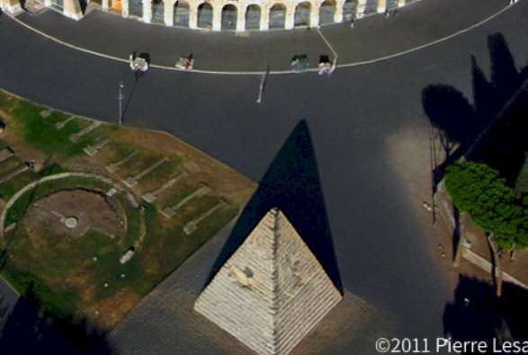
Or even a giant gorilla riding a tricycle...
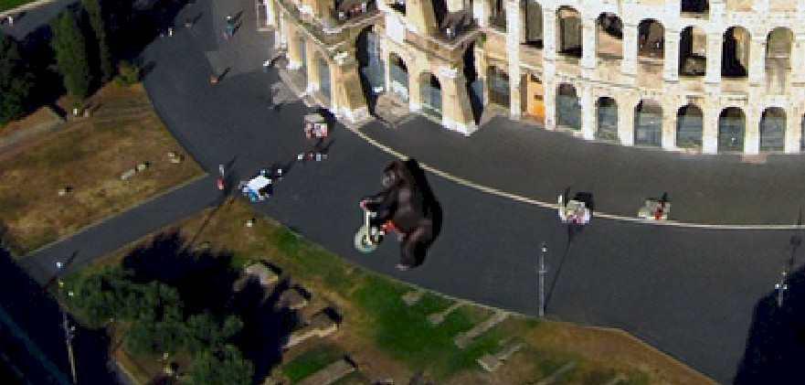
Notice that for each of the 4 images above, Generative Fill
even created accurate shadows that matches the other shadows in the image
In fact, I can use Generative Fill to add anything I can think of to my image. Yes, this is fun to play with, but remember that we are interested in removing things from our image. Before we move on, notice that not only did Generative Fill accurately create what I wanted, but it specifically adjusted the colors, lighting, shadows, tint, and so forth, of the objects so that they look like they belong in the image.
So, how does it work? When using Generative Fill, we simply make a selection and type into the Generative Fill text box exactly what we want Photoshop to generate. The objects we request are then created using Adobe Firefly, which is Adobe's AI engine. The ability to create virtually anything we can image means that Generative Fill is an incredibly powerful Photoshop tool.
Ok, but can Generative Fill be used to simply remove objects? Turns out.....sort of. Keep in mind that the function of Generative Fill is to add or replace objects using simple text prompts to create realistic results. We can use it to add pretty much anything we want, and to also replace things that are in our image that we would prefer be something else (this is how we are going to use Generative Fill in this tutorial). If we simply use Generative Fill to remove something, Photoshop will actually apply the Remove Tool that we have already used.
We are going to use Generative Fill to its full potential by removing the round area below...
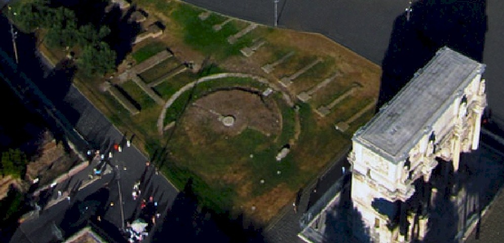
and replacing it with a nice, cool fountain.
|
Ok, history lesson here (keep reading, this is interesting). You may think that I want to add a fountain just because it is an interesting object to add to this kind of image, but I have another reason. Turns out that the round area in the image above is a piece of Roman antiquity known as the Meta Sudans. During the height of the Roman Empire, this was indeed the location of a fountain. Apparently, water filled the round area and there was a large, conic stonework in the center that the water came out of. The water did not shoot out of the top like modern fountains (which push the water out using pumps, something the ancient Romans did not have), but instead it slowly leaked out - the fountain was said to 'sweat' - and cascaded down the sides of the stone. If you are thinking 'that's not very interesting' then think again. The ancient Romans managed to not only bury water pipes without modern tools, but somehow got the water to come up out of the fountain. Let me say this again: WITH NO MODERN TOOLS. Could you figure out how to do that? |
The first thing we need to do is make a selection of the round area.
Select
the Elliptical Marquee Tool... 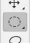
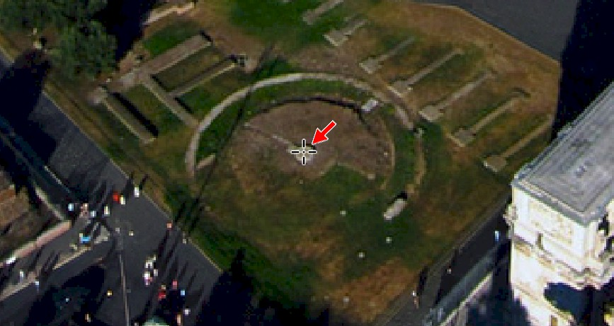
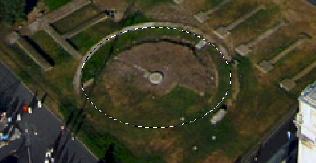
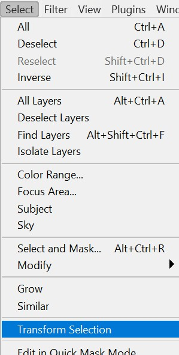
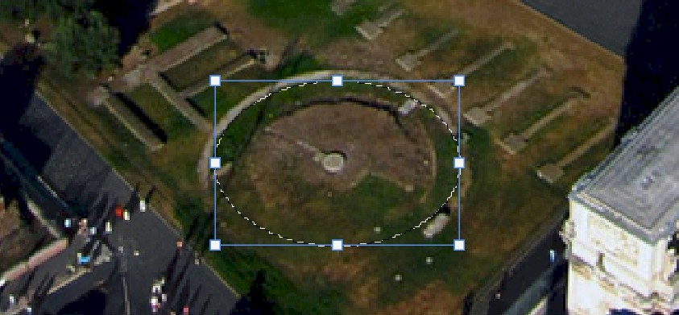
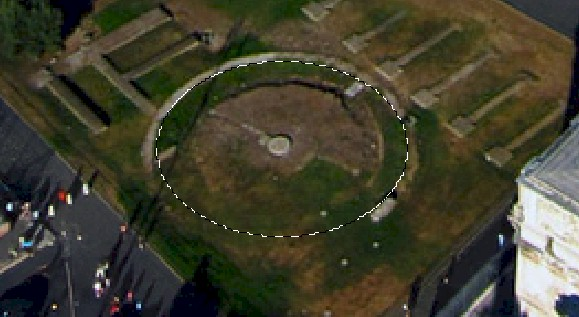
To use Generative Fill, we first need to locate the Contextual Task Bar. Look around your Photoshop window and locate the Contextual Task Bar...
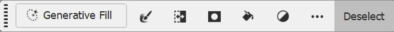
If you do not see the Contextual Task Bar, activate it in the Window menu...
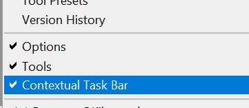
To generate our fountain, we simply need to click on the Generative Fill text area and type a description of what we want.
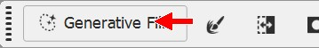
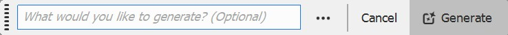
We now need a good description of what we want to see. Photoshop will then generate 3 different images that match our description. Keep in mind that the more specific our description, the closer we will get to what we want. For example, if I just type fountain as the prompt, this is what I get...
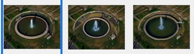
As you can see, these are pretty generic fountains. We need to use more descriptive terms. I'm going to use the term Roman fountain and see what I get.
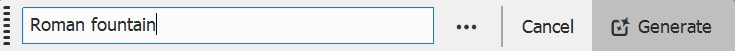
You should immediately notice a few things. First, there is a fountain where our selection area was...
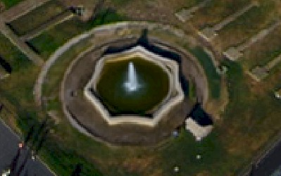
Note that your fountain will look different from mine. When Photoshop applies Generative Fill, it does so in a unique way for each user, so the fountains I get will be different from the fountains you get. Also note that the Properties panel has opened...
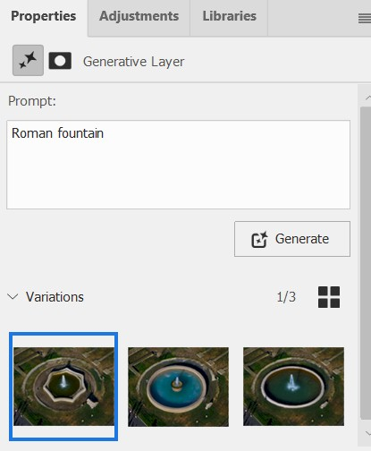
Pay attention to the Variations section at the bottom. Here you will see the three different fountains that Generative Fill has created. Clicking on each one will place it in your image.
Second, you should notice that you have a new layer that contains your fountains...
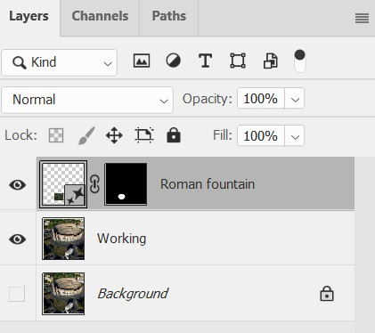
Having Photoshop create a new layer means that our generated objects can be viewed or not, and are added non-destructively to our image. It also allows us to make changes to only the generated object if we wish.
Turns out that I'm not a big fan of any of the fountains Photoshop has to offer. There are two different ways we can get more generated images. First, we can click the Generate button on either the Contextual Task Bar (where we typed the text Roman fountain), or on the Properties panel.
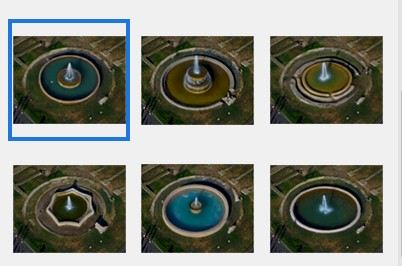
All of the fountains that Generative Fill has created so far appear too modern for our image. I'm going to try a different description and see what happens.
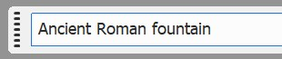
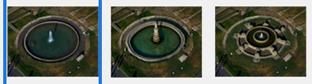
Looking through these new fountains, I like the second one in the image above, which looks like this in the image...
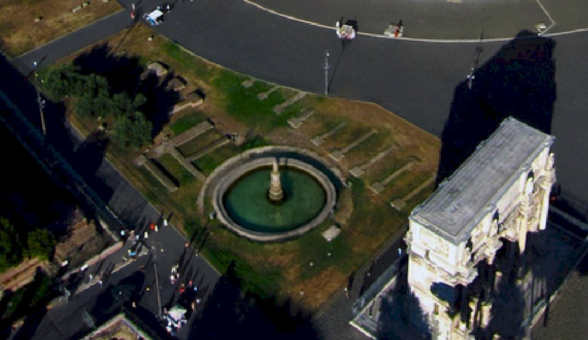
Keep in mind that your generated fountains will be different from mine. While I found one that I like (notice that the fountain in the image above looks very similar to the description of the actual fountain that was in place during Roman times), you may still have objects that you are unhappy with. This is not a problem, you simply need to continue generating fountains, or perhaps changing your description text, until you have a fountain you like.
|
A quick word here about the fountain you include in your image. You can certainly use one that has already been generated, but I encourage you to play around with the Generative Fill tool to see just what it is capable of doing. We have been using some pretty general descriptions, but something that you should try is to put in a very detailed description of what you want your fountain to look like. For example, you can type something like the following... stone fountain with a brick wall on the outside and a tall spire in the middle that has water flowing down the side and a wooden bridge to the center Below is a screenshot of one of the fountains that Generative Fill created using the above description...
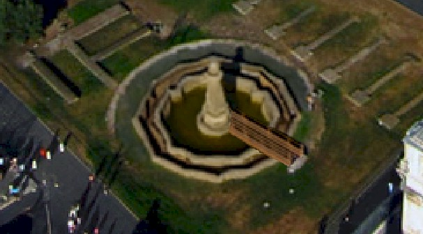 As you can see, I got exactly what I asked for. You are free to generate any fountain you want, so unlock your imagination and see what you can come up with. |
Let's save our work up to this point.
For our final individual tool, we will be using the Clone Stamp Tool, which is kind of a tool of last resort.